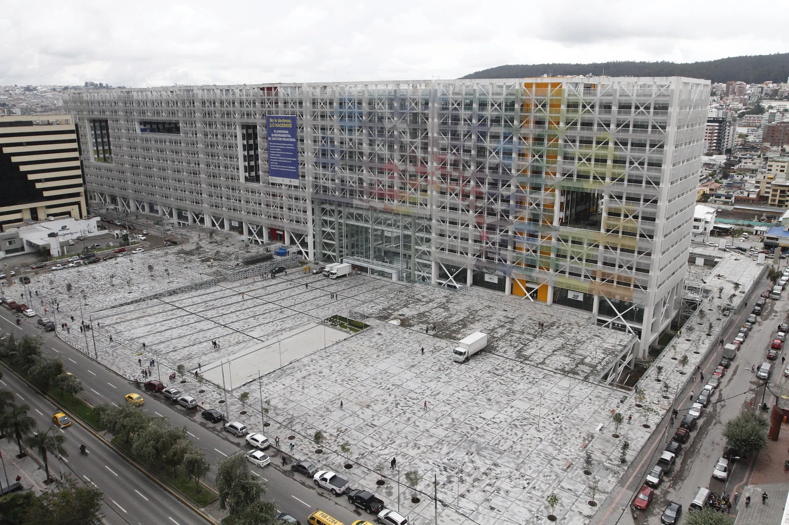
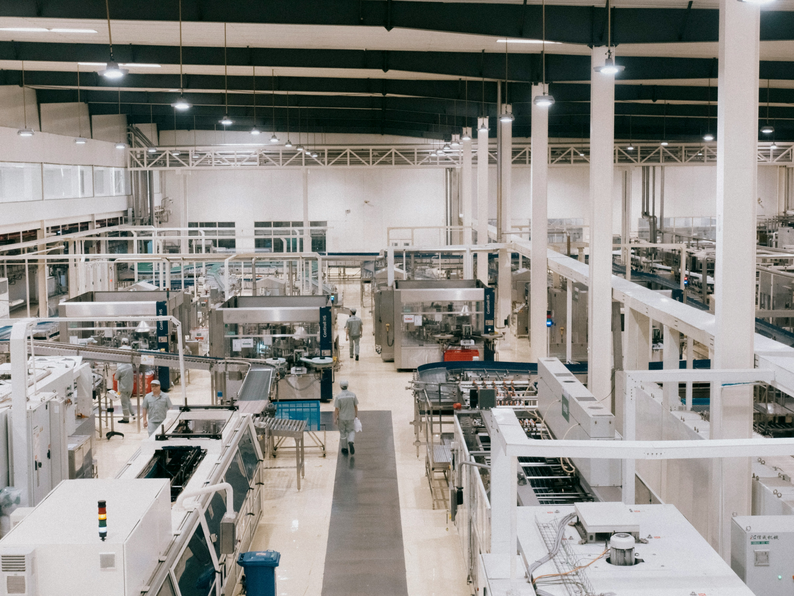

Documento estratégico publicado en primera edición 2026 por el Ministerio de Desarrollo Económico y Productivo, articulado con el Plan Nacional de Desarrollo 2025-2029 y con la Agenda 2030 de Naciones Unidas.
Resumen ejecutivo
Agenda de Crecimiento Ecuador 2040
Marco estratégico de política pública económica con horizonte al año 2040. Organiza la acción del Estado alrededor de cuatro pilares y nueve ejes orientados a movilizar inversión privada, sostener la dolarización y generar empleo formal.
Contexto
Datos de interés
Construida por el Grupo de Coordinación Estratégica Interinstitucional (MEF, MPCEI y Secretaría Nacional de la Administración Pública).
Parte del reconocimiento de que, en una economía dolarizada, el crecimiento sostenido depende de movilizar inversión privada bajo reglas claras, estables y creíbles.
Elaborada con acompañamiento técnico y financiero del Banco Interamericano de Desarrollo (BID).
La visión
La visión al 2040
La Agenda define en una sola frase el Estado que el país busca construir en las próximas dos décadas.
Visión país
Contar al 2040 con un Estado habilitador de inversión privada, competencia y formalidad que reduce costos institucionales, genera confianza y transforma sectores productivos en motores de crecimiento y empleo sostenibles.
Diagnóstico
Punto de partida
La Agenda parte de un diagnóstico documentado sobre dónde está hoy la economía ecuatoriana y qué brechas debe cerrar para crecer.
Crecimiento 2025
3,7%
Impulsado por el sector privado, frente a un promedio anual de 1,9% en la década 2014-2023. Proyección de mediano plazo: 2,7%.
Riesgo país
<400pb
En 2025-2026, su nivel más bajo en doce años, frente a un promedio de más de 998 puntos en 2014-2023.
Empleo adecuado
37,1%
De la PEA en 2025, tras subir 4,0 p.p. desde 2024. La informalidad promedió 55,7% en 2014-2023.
Proceso
Cómo se construyó
La Agenda se construyó con un enfoque bottom-up: las propuestas nacieron en mesas de trabajo con el sector productivo y subieron hasta consolidarse en un instrumento validado por el sector público.
Participación
360 asistentes · 201 instituciones
Mesas instaladas en Quito, Guayaquil y Cuenca, de las que salieron aproximadamente 800 propuestas.
Mesas transversales
Cinco mesas
Competitividad, conectividad, laboral, fiscal y financiero. Diseñadas con asesoría técnica del BID para identificar las barreras estructurales del desempeño agregado.
Mesas sectoriales
Siete mesas
Minería, electricidad, agroindustria, hidrocarburos, agropecuario, turismo y manufactura. Lideradas por Grupo FARO, con foco en visiones sectoriales al 2040.
Depuración
Ocho criterios
Las propuestas se filtraron con ocho criterios: viabilidad, estado, horizonte temporal, nivel de decisión, complejidad, instrumento, riesgo y rol del ente rector.
Horizontes
Corto · mediano · largo
- Corto 6–12 meses
- Mediano 12–36 meses
- Largo +36 meses
Marco de referencia
Alineación estratégica
La Agenda no opera aislada: se articula con los instrumentos de planificación vigentes en el país y con los compromisos internacionales.
Su eje «Competitividad y productividad» plantea al 2035 un sistema productivo sostenible, diversificado, equitativo y resiliente, con inserción estratégica en el mercado internacional.
Instrumento de observancia obligatoria para el sector público e indicativo para los demás sectores. La Agenda se alinea con cuatro de sus nueve objetivos nacionales: 4 y 5 (eje Económico, Productivo y Empleo) y 6 y 7 (eje Ambiente, Energía y Conectividad).
Los lineamientos se articulan principalmente con siete ODS, en particular con la meta 8.2: lograr niveles más elevados de productividad económica mediante la diversificación, la modernización tecnológica y la innovación.
La Agenda
Los cuatro pilares
La Agenda organiza su acción en cuatro pilares interdependientes, cada uno con sus ejes y lineamientos específicos. Toque cada pilar para revisar sus ejes, lineamientos y las acciones de política que los aterrizan.
Institucionalidad y Seguridad Jurídica
11 lineamientos →
Reglas claras, previsibilidad regulatoria y seguridad jurídica
como base para la inversión productiva.
Estabilidad Fiscal
8 lineamientos →
 Sistema financiero capaz de canalizar ahorro y crédito hacia la
inversión productiva, sosteniendo el modelo monetario.
Sistema financiero capaz de canalizar ahorro y crédito hacia la
inversión productiva, sosteniendo el modelo monetario.

Sostenibilidad de las finanzas públicas y un sistema tributario eficiente para la inversión y la productividad. Competitividad e Inversión Productiva 21 lineamientos →
Formalización laboral, infraestructura, innovación y coordinación público-privada. Dolarización y Profundización Financiera 7 lineamientos →
Sistema financiero capaz de canalizar ahorro y crédito hacia la
inversión productiva, sosteniendo el modelo monetario.
Motores de crecimiento
Sectores priorizados
La Agenda identifica siete sectores como motores del crecimiento y articula sus lineamientos alrededor de sus necesidades específicas, sumando un bloque transversal que atraviesa a todos ellos.
Agropecuario
Cadena de valor extendida al agro rural con enfoque en productividad, formalización y encadenamiento con la agroindustria.
Agroindustria
Transformación con valor agregado, exportación y encadenamientos con producción primaria nacional.
Hidrocarburos
Modernización contractual, delegación privada y esquemas asociativos con EP Petroecuador.
Electricidad
Sector habilitante: apertura del mercado, participación privada en generación y transición energética.
Minería
Sector intensivo en capital con horizontes largos que requiere marco regulatorio predecible.
Turismo
Posicionamiento internacional, Marca País y experiencias de alto valor.
Manufactura
Reducción de costos logísticos, insumos competitivos y simplificación tributaria.
Transversales
Acciones que no pertenecen a un sector específico y atraviesan a todos: formalización, acceso a crédito y simplificación regulatoria, con especial incidencia sobre las MIPYMES.
Actores institucionales
Voces detrás de la Agenda
Los mensajes clave de los tres actores institucionales que respaldan la construcción y publicación del documento.

Estamos cambiando la historia del Ecuador con hechos, con trabajo diario y con la mirada siempre puesta en el futuro.
Las reglas generan confianza; la estabilidad fiscal sostiene esa confianza; la competitividad convierte las oportunidades en proyectos; y el financiamiento permite que esos proyectos se transformen en inversión, producción y empleo.
El éxito de la Agenda 2040 no se medirá por el documento (...) Se medirá por la inversión que movilice, los empleos que cree y las oportunidades que abra para todos los ecuatorianos.
Próximos pasos
De la visión a la acción
El documento define tres elementos de trabajo iniciales para pasar de los lineamientos a la implementación.
Gobernanza e institucionalización
Se plantea crear una instancia permanente que asuma el liderazgo estratégico de la Agenda para garantizar apropiación institucional, seguimiento, continuidad y rendición de cuentas.
- Los pilares, ejes, lineamientos y acciones serán socializados y entregados formalmente a cada ente rector.
- Se definirán papel y responsabilidades de la instancia de coordinación general, entes rectores, sector privado y organismos de cooperación.
- Se crearán mecanismos de articulación con los espacios de gobernanza ya existentes, evitando estructuras paralelas.
Cooperación estratégica
Componente complementario orientado a fortalecer capacidades técnicas, financieras y de gestión.
- Identificar oportunidades de cooperación técnica y financiera con organismos multilaterales y de cooperación internacional.
- Articular con otras iniciativas de cooperación regional, aprovechando plataformas y redes existentes.
Seguimiento y rendición de cuentas
Estrategia para identificar qué iniciativas están en ejecución, en planificación o requieren ajustes, manteniendo el carácter dinámico de la Agenda frente a la coyuntura.
- Formulación del marco de seguimiento, con mecanismos de transparencia y disponibilidad de información.
- Espacios de diálogo con actores públicos, privados y multilaterales para socializar avances.
- Construcción de un panel de control dinámico con información sobre los avances en la implementación.